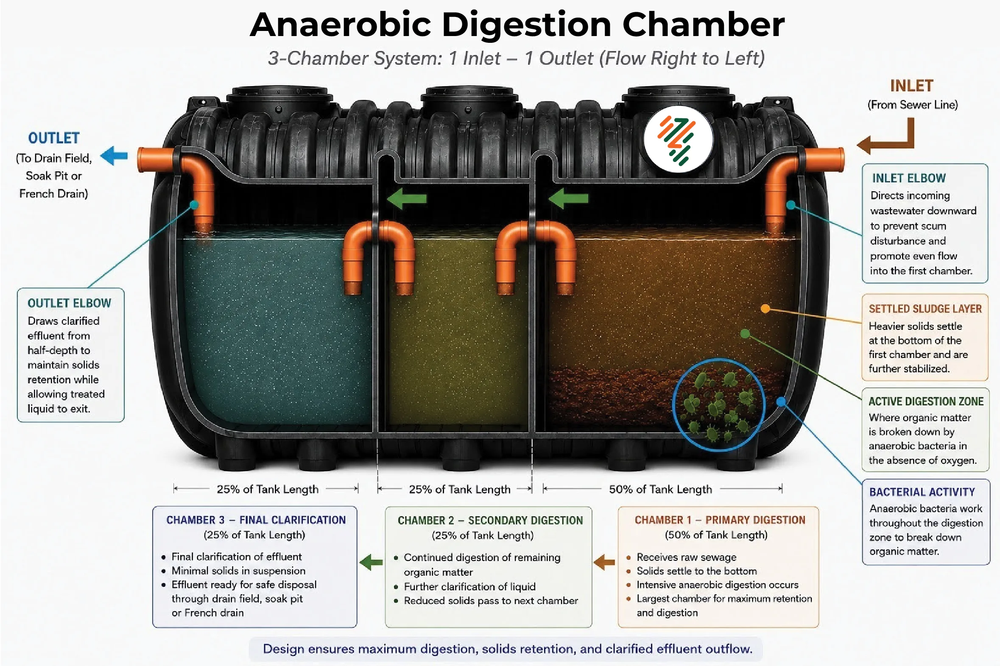

Size for the actual load
Occupancy and water use affect daily flow and retention time.
Learn how anaerobic treatment works, what happens in each chamber, and why soil and dispersal design matter as much as the tank.
Anaerobic digestion is a sequence of biological processes. The stages overlap in practice, and performance depends on system design and operating conditions.
Enzymes break larger organic compounds into smaller, soluble compounds.
Acid-forming bacteria convert these compounds into organic acids, alcohols, hydrogen and carbon dioxide.
Acetogenic bacteria convert organic acids and alcohols into acetate, hydrogen and carbon dioxide.
Methanogenic archaea use acetate and hydrogen to produce methane and carbon dioxide. The resulting liquid still needs a suitable final treatment or discharge stage.
Wastewater moves through a series of chambers. Solids settle, anaerobic bacteria break down organic matter, and the liquid continues to an appropriate dispersal or polishing stage.
This illustration shows a typical three-chamber tank supplied by BioTank Africa. Greenshift layouts and materials vary by project.
Image source: BioTank Africa
The quality and destination of treated wastewater depend on the full installation, local requirements and site conditions.
Occupancy and water use affect daily flow and retention time.
Soil, groundwater, setbacks and local approvals guide the effluent route.
Use qualified site assessment and laboratory testing when permits or project conditions call for it.
Treated effluent from properly engineered Greenshift anaerobic digesters demonstrates consistent reductions in Biological Oxygen Demand (BOD5), Total Suspended Solids (TSS), and pathogens, meeting regulatory environmental discharge criteria.
Sewage contains biogenic sulfuric acid produced by sulfur-oxidizing bacteria, which destroys ordinary cement within 5 to 7 years. Greenshift utilizes specialized structural metallurgy and chemistry:
Share the site plan and any available soil or groundwater information to discuss the project requirements.
Request Site Engineering Assessment